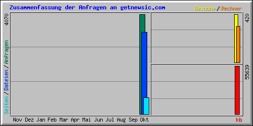

| Zusammenfassung nach Monaten | ||||||||||
|---|---|---|---|---|---|---|---|---|---|---|
| Monat | Tagesdurchschnitt | Monats-Summe | ||||||||
| Anfragen | Dateien | Seiten | Besuche | Rechner | kb | Besuche | Seiten | Dateien | Anfragen | |
| Okt 2015 | 254 | 208 | 42 | 26 | 315 | 55639 | 420 | 677 | 3340 | 4070 |
| Summen | 55639 | 420 | 677 | 3340 | 4070 | |||||
| Generated by Webalizer Version 2.23 |